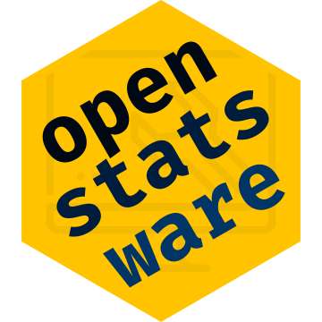
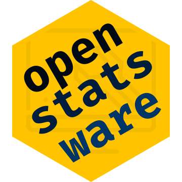

# oc_Predprob ----
test_that("the sum of Eff, Fut, Gray zone probability is 1", {
set.seed(1989)
expect_warning(results <- ocPredprob(
nnE = c(10, 20),
truep = 0.4,
p0 = 0.25,
tT = 0.6,
phiL = 0.2,
phiU = 0.8,
parE = c(1, 1),
sim = 50,
wiggle = FALSE,
decision1 = TRUE
), "Advise to use sim >= 50000 to achieve convergence")
results <- sum(results$oc[5:7])
expect_equal(results, 1)
})Good Software Engineering Practice for R Packages
Audrey Yeo, MSc Biostatistics
Acknowledgements to Daniel Sabanés Bové, all contributors to Zürich GSWE4R course
Introduction
Opinions do not reflect employerThis presentation has ALT text and as much as possible, uses colour-blind friendly palettesCode for this Quarto-rendered .html will also be shared
Acknowledgements and further events
Acknowledge my colleague Daniel Sabanés Bové
Slides adapted from
- Zurich Good Software Engineering Practice April 2024
- Gearing Industry Statisticians up for Software Success September 2024
We’re giving another course at ISCB 2025 in Basel on 24 August 2025
About me
Audrey Yeo, MSc Biostats
Research Statistician and Software Engineer
 

Objective for the next 15 minutes
The low hanging fruits of :
Attitudes and Motivation for GSWEP4R
R package structure
Workflow : From Ideation, Design to Production
Clean Code rules
Tests and Checks
Version control && Collaboration
Attitude & Motivation
- always learning
- open to diverse approaches
- striving for better approaches to build R packages that are
- reliable
- reusable
- easy to maintain
On GSWEP4R
What:
improve quality and longevity of R code/packages
collection of best practices
Do not invent the wheel: learn from community
Why:
R is one of the most successful statistical programming languagespowerful yet complex ecosystem
R packages are core
concepts applicable to other languages
Package Structure
usethis::create_package()
- Mandatory:
- DESCRIPTION
- NAMESPACE
- R
- man
- Typically also includes:
- data
- inst
- src
- tests
- vignettes
- NEWS
R Package Engineering Workflow
Typical work steps in practice
- Idea
- R package programming
- Use in production
- Bug fixing
- Use in production
- Bug fixing + Documentation
- Use in production
- Bug fixing + Further development
- Use in production
- Bug fixing + …
Idea : Design Doc

Any user-facing function that require breakdown, starts with Design-document
Helps achieve Clarity on the form and purpose of the user-facing function
Test regular and edge cases
Makes the rest of the work “easier” when the goals are clear
Most of the “skeleton” and “flesh” of the work can already be done in the because of 1-3
Source R code and roxygen2 documentation
roxygen2 Output
% Generated by roxygen2: do not edit by hand
% Please edit documentation in R/plotOc.R
\name{plotOc}
\alias{plotOc}
\title{Display the operating characteristics results using an \code{oc} object}
\usage{
plotOc(decision, sample_size, all_looks, wiggle_status)
}
\arguments{
\item{decision}{(\code{numeric}):\cr Go, Stop or Gray Zone decisions of all looks simulated \code{length(sim)} times.}
\item{all_looks}{(\code{numeric}):\cr original looks before adjustment by \code{wiggle = TRUE}, if applied.}
\item{wiggle_status}{(\code{flag}):\cr from \code{wiggle} flag in object.}
}
\value{
ggplot object
}
\description{
Plots results from simulated results of :
\itemize{
\item \verb{[ocPostprob()]}
\item \verb{[ocPostprobDist()]}
\item \verb{[ocPostpred()]}
\item \verb{[ocPostpredDist()]}
\item \verb{[ocRctPostprobDist()]}
\item \verb{[ocRctPredprobDist()]}
}roxygen2 Output (cont’d)
NAMESPACE:
Summary of Clean Code Rules
- Naming: Use descriptive and meaningful names for variables, functions, and classes
- Formatting: Adhere to consistent indentation, spacing, and bracketing to make the code easy to read
- Simplicity: Keep the code as simple and straightforward as possible, avoiding unnecessary complexity
- Single Responsibility Principle (SRP): Each function should have a single, well-defined purpose
- Don’t Repeat Yourself (DRY): Avoid duplication of code, either by reusing existing code or creating functions
Summary of Clean Code Rules
- Comments: Use comments to explain the purpose of code blocks and to clarify complex logic
- Error Handling: Include error handling code to gracefully handle exceptions and unexpected situations
- Test-Driven Development (TDD): Write tests for your code to ensure it behaves as expected and to catch bugs early
- Refactoring: Regularly refactor your code to keep it clean, readable, and maintainable
- Code Review: Have other team members review your code to catch potential issues and improve its quality
tests Folder
- Where store the unit tests covering the functionality of the package
- Get started with
usethis::use_testthat()andusethis::use_test()and populatetests/testthatfolder with unit tests - Rarely, tests cannot be run within
testthatframework, then these can go into R scripts directly intestsdirectory - Can test for numerical “equality” (tolerance considered), or graphical snaps.
Testing Example with expect_equal()
test-ocPredprob
Testing Example with snaps
test-plotOc
test_that("plotOc gives expected results for `ocPredprobDist` with different relativeDelta status", {
set.seed(2025)
expect_warning(res7 <- ocPredprobDist(
nnE = c(10, 20, 30),
truep = 0.40,
deltaE = 0.10,
deltaF = 0.10,
relativeDelta = FALSE,
tT = 0.6,
phiU = 0.80,
phiL = 0.20,
parE = c(1, 1),
parS = c(5, 25),
weights = 1,
weightsS = 1,
sim = 50,
wiggle = TRUE,
decision1 = TRUE
))
expect_warning(res8 <- ocPredprobDist(
nnE = c(10, 20, 30),
truep = 0.40,
deltaE = 0.5,
deltaF = 0.5,
relativeDelta = TRUE,
tT = 0.6,
phiU = 0.80,
phiFu = 0.7,
parE = c(1, 1),
parS = c(5, 25),
weights = 1,
weightsS = 1,
sim = 50,
nnF = c(10, 20, 30),
wiggle = TRUE,
decision1 = TRUE
))
result1 <- plotOc(
decision = res7$Decision,
sample_size = res7$SampleSize,
all_looks = res7$Looks,
wiggle_status = res7$params$wiggle
)
result2 <- plotOc(
decision = res8$Decision,
sample_size = res8$SampleSize,
all_looks = res8$Looks,
wiggle_status = res8$params$wiggle
)
vdiffr::expect_doppelganger(
title = "Plot of simulation result without relativeDelta for posterior predictive probability",
fig = result1
)
vdiffr::expect_doppelganger(
title = "Plot of simulation result with relativeDelta for posterior predictive probability",
fig = result2
)
})Some available tests
| Function name | Does code… |
|---|---|
| expect_condition | fulfill a condition? |
| expect_equal | return the expected value? |
| expect_error | throw an error? |
| expect_false | return ‘FALSE’? |
| expect_gt | return a number greater than the expected value? |
| expect_gte | return a number greater or equal than the expected value? |
| expect_identical | return the expected value? |
| expect_invisible | return a invisible object? |
| expect_length | return a vector with the specified length? |
| expect_lt | return a number less than the expected value? |
| expect_lte | return a number less or equal than the expected value? |
More available tests
| Function name | Does code… |
|---|---|
| expect_no_condition | run without condition? |
| expect_no_error | run without error? |
| expect_no_message | run without message? |
| expect_no_warning | run without warning? |
| expect_silent | execute silently? |
| expect_true | return ‘TRUE’? |
| expect_type | return an object inheriting from the expected base type? |
| expect_vector | return a vector with the expected size and/or prototype? |
| expect_visible | return a visible object? |
| expect_warning | throw warning? |
Checking the Package
- R comes with pre-defined check command for packages: “the R package checker” aka
R CMD check - About 22 checks are run (so quite a lot), including things like:
- Can the package be installed?
- Is the code syntax ok?
- Is the documentation complete?
- Do tests run successfully?
- Do examples run successfully?
- In RStudio: Build > Check
- In the console:
devtools::check()
Building the Package
- The R package folder can be compressed into a single package file
- Typically we manually only build “source” package
- In RStudio: Build > More > Build Source Package
- In the console:
devtools::build()
- Makes it easy to share the package with others and submit to CRAN
Version Control and Collaboration
A typical GitHub workflow
Version Controlling
- many products available such as GitHub and GitLab
- works with working alone or in a team
- allows managing versions and work of many collaborators
- simplifies the many changes people working togehter does
- BASH code skills required
GitHub
- tidyverse, ggplot2, pharmaverse are on GitHub
- allows automation of checks
- extremely useful to enforce best-practices & quality
Personal remarks.
Creating the conditions for success, is also good practice
- Good Practice will evolve
- Safe space to be ask any questions, and iterate, even for a seasoned engineer is effective and efficient
- Positive bias & Trust are win-win situations
- Confidence through competence in learning good practices
- Learning through mistakes is key
Thank you
Audrey Yeo
BSci MSc Biostats RN
Research Statistician and Software Engineer
References
- Zurich Good Software Engineering Practice April 2024
- Gearing Industry Statisticians up for Software Success September 2024
- R Packages (2e)
- Writing R Extensions
- Super technical details about R Markdown
- Cotton, R. (2017). Testing R Code (Illustrated Edition).
Taylor & Francis Inc. [Book] - Martin, R. (2008). Clean Code: A Handbook of Agile Software Craftsmanship (1st Edition). Prentice Hall. [Book]
- Gillespie, C., & Lovelace, R. (2017). Efficient R Programming: A Practical Guide to Smarter Programming. O’Reilly UK Ltd. [Book | Online]
- Grolemund, G. (2014). Hands-On Programming with R: Write Your Own Functions and Simulations (1. Aufl.).
More references
Rupp, C., & SOPHISTen, die. (2009). Requirements-Engineering und -Management: Professionelle, iterative Anforderungsanalyse für die Praxis (5. Ed.). Carl Hanser Verlag GmbH & Co. KG. [Book]
Wickham, H. (2015). R Packages: Organize, Test, Document, and Share Your Code (1. Aufl.). O’Reilly and Associates. [Book | Online]
Wickham, H. (2019). Advanced R, Second Edition.
Taylor & Francis Ltd. [Book | Online]Inclusive Speaker Orientation Linux Foundation
Zeileis, Fisher, Hornik, Ihaka, McWhite, Murrell, Stauffer, Wilke (2020) colorspace: A Toolbox for Manipulating and Assessing Colors and Palettes. Journal of Statistical Software.
DAGStat 2025 Berlin : Section 64 Innovations in Statistical Software and Methodology